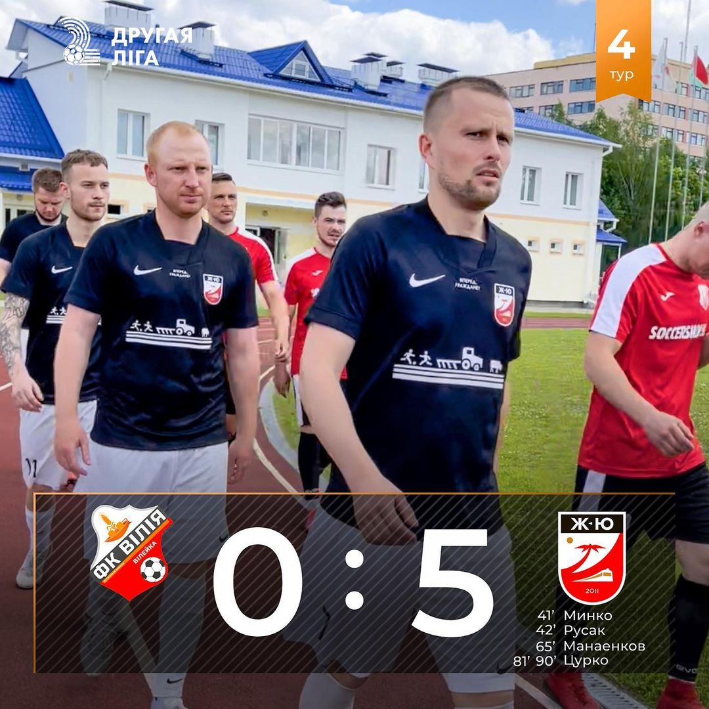
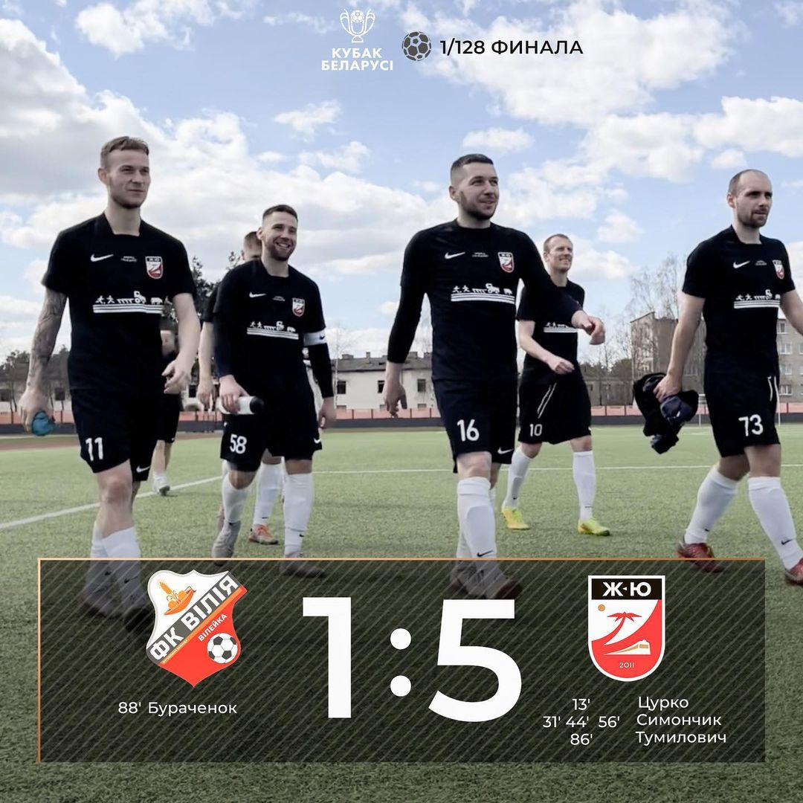

Вторая лига. Финальный этап. 1/4 ЖЮ - Крумкачи
Вторая лига. Финальный этап. 1/8(второй матч) ЖЮ - Новая Припять
Вторая лига. Финальный этап. 1/8(первый матч) Новая Припять - ЖЮ
Вторая лига. Финал минской области. Виктория - ЖЮ
Вторая лига. Полуфинал минской области(второй матч) ЖЮ - Бобовня
Вторая лига. Полуфинал минской области(первый матч) Бобовня - ЖЮ
Вторая лига. Минская область. 14 тур. Виктория - ЖЮ
Вторая лига. Минская область. 13 тур. ЖЮ - Березино
Вторая лига. Минская область. 12 тур. Фалько - ЖЮ
 Вторая лига. Минская область. 11 тур. ЖЮ - Вилия
Вторая лига. Минская область. 11 тур. ЖЮ - Вилия
Вторая лига. Минская область. 10 тур. ЖЮ - Крупки ДРСУ-164
Вторая лига. Минская область. 9 тур. Колос - ЖЮ
Вторая лига. Минская область. 8 тур. ЖЮ - Единство
Вторая лига. Минская область. 7 тур. ЖЮ - Виктория
Вторая лига. Минская область. 6 тур. Березино - ЖЮ
Кубок Беларуси 2022/2023. 1/16. ЖЮ - Торпедо-БелАЗ
Вторая лига. Минская область. 5 тур. ЖЮ - Фалько

Вторая лига. Минская область. 4 тур. Вилия - ЖЮ
Вторая лига. Минская область. 3 тур. Крупки ДРСУ-164 - ЖЮ
Кубок Беларуси 2022/2023. 1/32. Неман-Белкард - ЖЮ
Вторая лига. Минская область. 2 тур. ЖЮ - Колос
Кубок Беларуси 2022/2023. 1/64. ЖЮ - Березино
Вторая лига. Минская область. 1 тур. Единство - ЖЮ

Кубок Беларуси 2022/2023. 1/128. Вилия - ЖЮ